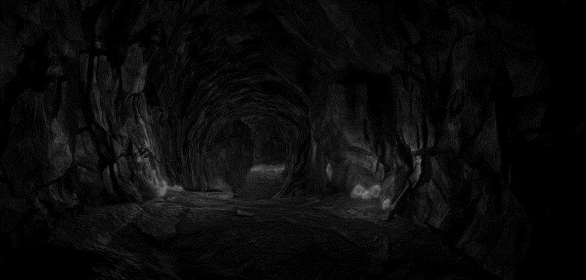

Part II: La Cova
L'entrada de la cova — Una cicatriu fosca a la muntanya
Després de la Batalla
Després de derrotar els gòblins, la investigació del campament revela:
- Poques armes de gel encrostades, alguna riquesa menor.
- Un ídol d'obsidiana tallat d'una bonica i terrorífica Reina Fey (amb una petita quantitat de poder màgic difícil de discernir).
- Examinant els cossos dels gòblins: un DC 15 Medicina revela alguna cosa sota la pell d'un dels canells, amb forma de manilla d'espines que de vegades sobresurt de la pell i filtra una foscor fumosa. Desapareixen en fum 5 minuts després de la mort.
- Les cabanes contenen roba humana, pertinences i menjar de les granges properes.
La Boca de la Cova
L'entrada de la cova aspira l'aire cap endins. Una inquietud creixent s'apodera de qui s'hi acosta. El terra està tacat d'un carmesí fosc.
Entrar-hi amb llum revela un antic corredor treballat tallat a la muntanya, picat i marcat per l'edat. El rastre carmesí porta cap avall. Un control d'Investigació mostra moviments d'una criatura més gran a través del passadís.
El camí s'obre en una sala ampla coberta de taques de sang, però sense ossos. Al fons descansa un altar de pedra tosca davant d'una paret completament carmesí. Cada centímetre de la paret de la cambra està cobert de runes, símbols i marques gravades.
El Mur de Sang
La investigació de les marques revela dos texts llegibles: Infernal i Èlfic.
Inscripció Èlfica
«La clau es troba a dins i és fàcil de trobar, pinta't amb ella i la meva màgia t'astornarà, pot semblar una tasca fàcil, però vigila amb el que anhelis, car allò que donis, jo ho retornaré.»
Inscripció Infernal
«La clau es troba al teu cap, usa la clau per pintar-me de vermell, vigila amb allò que menyspreïs, car allò que donis serà retornat.»
Mecàniques del Mur de Sang:
- El Mur de Sang requereix sang fresca per travessar-lo.
- Produirà un clon exacte de qui sigui el propietari de la sang com a agent hostil que atacarà immediatament.
- Si els aventurers usen la seva pròpia sang: apareix un clon amb les mateixes forces i encanteris.
- Si usen sang d'un gòblin de gel mort: es reprodueix un gòblin de gel.
- Si llancen una criatura: tirar 1d8 per determinar quantes gotes de sang toquen el mur = nombre de criatures que apareixen.
Quan la sang toca el mur, se sent un gemec i totes les taques fosques del terra i les parets comencen a moure's, lliscant per sobre i a través de les pedres com si el terra fos transparent, fins que s'acumulen al centre del mur i un clon de sang apareix.
Després del Mur
El clon o clons moren explotant en sang. Els aventurers propers han de superar un DC 14 Constitució o patir ceguesa temporal.
Quan el clon mor, la seva sang flueix de nou cap al mur i retrocedeix sense costures dins la cova abans de tancar-se amb un esclat que fa tremolar la terra. El silenci que segueix és eixordador mentre un buit negre us mira fixament. La llum parpelleja als marges de l'obertura de la cova i el rastre de sang continua cap avall, cap a la foscor. Un degoteig ressona túnel amunt, acompanyat del gemec d'un vent de mal averany.
La porta de pedra que s'obre de cop senyala alguna cosa en les profunditats que se li ha ofert menjar — un Basilisk que els gòblins de gel buscaven capturar i ensinistrar. L'han estat invocant a través del Mur de Sang i deixant oferenes de vilatans humans a l'altar.
- Si els personatges esperen: el Basilisk emergeix i lluita en l'espai estret.
- Si avancen immediatament: poden passar de llarg pel cau del Basilisk abans que emergeixi.
- Hi ha 2 Basilisks en total (un custodia els ous al cau).
- DC 15 Sigil per passar desapercebuts.